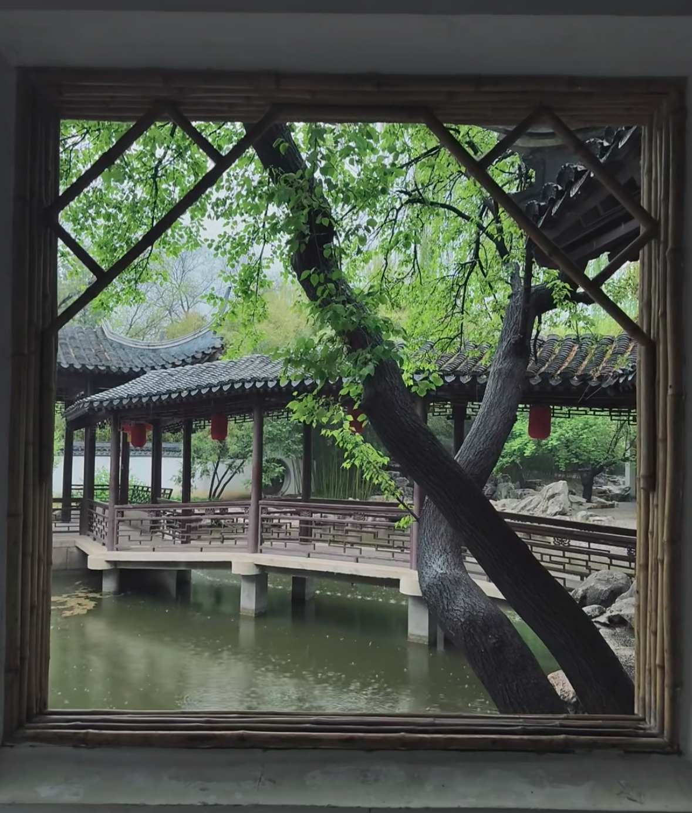

路线策展
探索北平的文化脉络，感受历史与现代的交融
城市记忆

文学与光阴的交错
从古塔到藏书楼的北平三重时间，探索北京的文学与历史记忆，感受时间的流转与文明的传承。

北京的江南烟雨
体验北方的江南水乡风情，在紫竹院中感受皇家园林的南渡梦影，探索友贤山馆、翠池等景点。

与地坛同呼吸
跟随史铁生的脚步探索地坛的文学与生命意义，在寂静中听见生命的回响，感受生命的沉思与力量。
城市记忆集章
已收集 0/5 个印章
📜
文学与光阴
未收集
🌧️
江南烟雨
未收集
🌳
与地坛同呼吸
未收集
🧭
城市探索者
未收集
🏛️
文化传承者
未收集
探索不同路线，收集更多印章吧！
01
文学与光阴的交错
从古塔到藏书楼的北平三重时间
2-3小时探索北京的文学与历史记忆，从万松老人塔到正阳书局，再到红楼藏书楼，感受时间的流转与文明的传承。
万松老人塔
正阳书局
红楼藏书楼
🤖 AI语音导游
点击播放按钮，聆听路线讲解
🗺️ 虚拟漫游
02
北京的江南烟雨
一座皇家园林的南渡梦影
3-4小时体验北方的江南水乡风情，在紫竹院中感受皇家园林的南渡梦影，探索友贤山馆、翠池、问月楼等景点。
友贤山馆
翠池
问月楼
紫御湾码头
🤖 AI语音导游
点击播放按钮，聆听路线讲解
🗺️ 虚拟漫游
03
与地坛同呼吸
在寂静中，听见生命的回响
2-3小时跟随史铁生的脚步探索地坛的文学与生命意义，在方泽坛、古柏区、神库等地感受生命的沉思与力量。
方泽坛
古柏区
神库
我与地坛书店
🤖 AI语音导游
点击播放按钮，聆听路线讲解